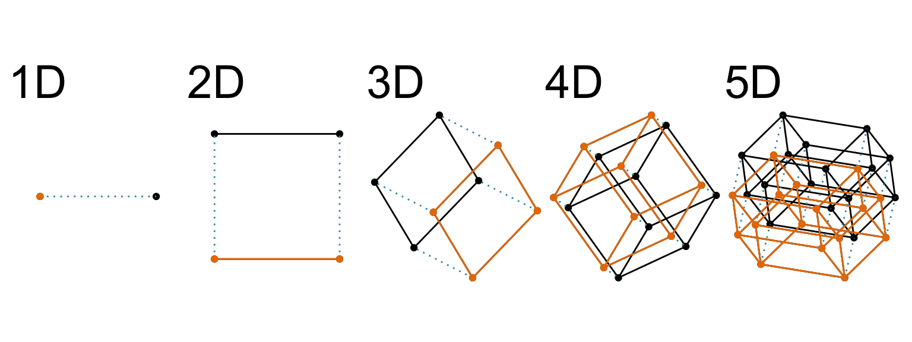
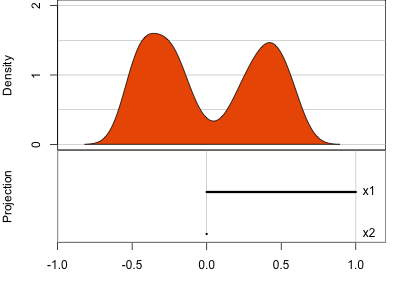
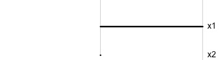
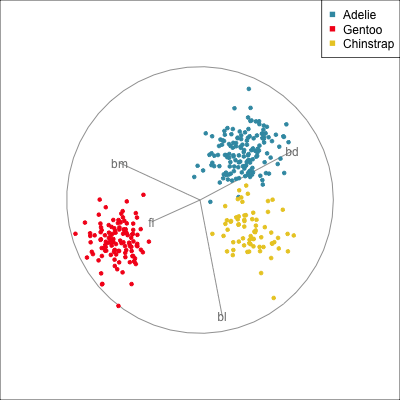
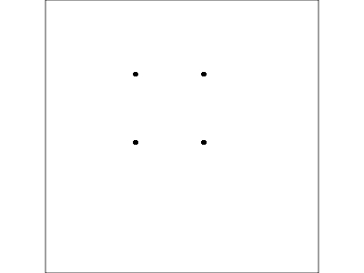
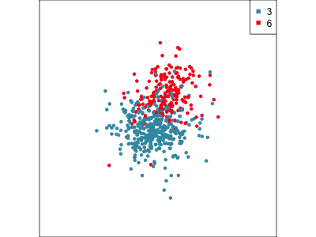
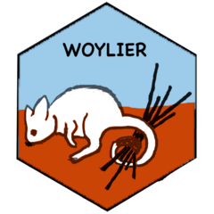

Visually exploring high-dimensional market segmentation data
Dianne Cook
You can’t see beyond 3D!We are going to see that we can gain intuition for structure in high dimensions through visualisation
The greatest value of a data plot is when it forces us to notice what we never expected to see. ~Adapted from a Tukey quote.
It doesn’t mean that it’s easy. It doesn’t mean that visualisation is used alone. It means that (high-dimensional) visualisation is an important part of your toolbox, especially to allow discovery of what we don’t know .
Outline
Using a tour to see into high dimensions
Why use a tour
Algorithms in the tourr package
New developments in recent years
Using tours to understand dimension reduction and clustering
Applying to market segmentation
Future research directions
High-dimensional visualisation
(and slices/sections to see through a shadow)
High-dimensions in statistics

Increasing dimension adds an additional orthogonal axis.
If you want more high-dimensional shapes there is an R package, geozoo , which will generate cubes, spheres, simplices, mobius strips, torii, boy surface, klein bottles, cones, various polytopes, …
And read or watch Flatland: A Romance of Many Dimensions (1884) Edwin Abbott .
Explanation
Data
X n × p = [ X 1 X 2 … X p ] n × p = [ x 11 x 12 … x 1 p x 21 x 22 … x 2 p ⋮ ⋮ ⋮ x n 1 x n 2 … x n p ] n × p \begin{eqnarray*}
X_{~n\times p} =
[X_{~1}~X_{~2}~\dots~X_{~p}]_{~n\times p} = \left[ \begin{array}{cccc}
x_{~11} & x_{~12} & \dots & x_{~1p} \\
x_{~21} & x_{~22} & \dots & x_{~2p}\\
\vdots & \vdots & & \vdots \\
x_{~n1} & x_{~n2} & \dots & x_{~np} \end{array} \right]_{~n\times p}
\end{eqnarray*}
Explanation
Projection basis
A p × d = [ a 11 a 12 … a 1 d a 21 a 22 … a 2 d ⋮ ⋮ ⋮ a p 1 a p 2 … a p d ] p × d \begin{eqnarray*}
A_{~p\times d} = \left[ \begin{array}{cccc}
a_{~11} & a_{~12} & \dots & a_{~1d} \\
a_{~21} & a_{~22} & \dots & a_{~2d}\\
\vdots & \vdots & & \vdots \\
a_{~p1} & a_{~p2} & \dots & a_{~pd} \end{array} \right]_{~p\times d}
\end{eqnarray*}
Explanation
Projected data
Y n × d = X A = [ y 11 y 12 … y 1 d y 21 y 22 … y 2 d ⋮ ⋮ ⋮ y n 1 y n 2 … y n d ] n × d \begin{eqnarray*}
Y_{~n\times d} = XA = \left[ \begin{array}{cccc}
y_{~11} & y_{~12} & \dots & y_{~1d} \\
y_{~21} & y_{~22} & \dots & y_{~2d}\\
\vdots & \vdots & & \vdots \\
y_{~n1} & y_{~n2} & \dots & y_{~nd} \end{array} \right]_{~n\times d}
\end{eqnarray*}
High-dimensional visualisation

Data is 2D: p = 2 ~~p=2
Projection is 1D: d = 1 ~~d=1
A 2 × 1 = [ a 11 a 21 ] 2 × 1 \begin{eqnarray*}
A_{~2\times 1} = \left[ \begin{array}{c}
a_{~11} \\
a_{~21}\\
\end{array} \right]_{~2\times 1}
\end{eqnarray*}
A A

A = [ 1 0 ] A = [ 0.7 0.7 ] A = [ 0.7 − 0.7 ] \begin{eqnarray*}
A = \left[ \begin{array}{c}
1 \\
0\\
\end{array} \right]
~~~~~~~~~~~~~~~~
A = \left[ \begin{array}{c}
0.7 \\
0.7\\
\end{array} \right]
~~~~~~~~~~~~~~~~
A = \left[ \begin{array}{c}
0.7 \\
-0.7\\
\end{array} \right]
\end{eqnarray*}
unimodality
bimodality, there are two clusters.
What does the 2D data look like? Can you sketch it?
High-dimensional visualisation
High-dimensional visualisation
Data is 3D: p = 3 p=3
Projection is 2D: d = 2 d=2
A 3 × 2 = [ a 11 a 12 a 21 a 22 a 31 a 32 ] 3 × 2 \begin{eqnarray*}
A_{~3\times 2} = \left[ \begin{array}{cc}
a_{~11} & a_{~12} \\
a_{~21} & a_{~22}\\
a_{~31} & a_{~32}\\
\end{array} \right]_{~3\times 2}
\end{eqnarray*}
A A
See:
circular shapes
some transparency, reveals middle
hole in in some projections
no clustering
High-dimensional visualisation
Data is 4D: p = 4 p=4
Projection is 2D: d = 2 d=2
A 4 × 2 = [ a 11 a 12 a 21 a 22 a 31 a 32 a 41 a 42 ] 4 × 2 \begin{eqnarray*}
A_{~4\times 2} = \left[ \begin{array}{cc}
a_{~11} & a_{~12} \\
a_{~21} & a_{~22}\\
a_{~31} & a_{~32}\\
a_{~41} & a_{~42}\\
\end{array} \right]_{~4\times 2}
\end{eqnarray*}
three, right?
one separated, and two very close,
and they each have an elliptical shape.
do you also see an outlier or two?
Early tour algorithms
Grand tour : see from all sides
Guided tour : Steer towards the most interesting features.
Why? (Three cluster data)
Avoid being a blind man inspecting the elephant
Principal component analysis
NLDR: t-Stochastic neighbourhood embedding
Philosophy: Model in the data space (1/2)
Data in the model space 1
Model in the data space
Code
library (mulgar)<- pca_model (p_pca, s= 2.2 )<- rbind (p_pca_m$ points, penguins_sub[,1 : 4 ])animate_xy (p_pca_m_d, edges= p_pca_m$ edges,axes= "bottomleft" ,edges.col= "#E7950F" ,edges.width= 3 )render_gif (p_pca_m_d, grand_tour (), display_xy (half_range= 4.2 ,edges= p_pca_m$ edges, edges.col= "#E7950F" ,edges.width= 3 ),gif_file= "gifs/p_pca_model.gif" ,frames= 500 ,width= 400 ,height= 400 ,loop= FALSE )
Philosophy: Model in the data space (2/2)
Model in the data space
Stay tuned for new work to appear later this year
Hiding in high-d (1/2)
Code
library (tidyverse)library (tourr)library (GGally)set.seed (946 )<- tibble (x1= runif (200 , - 1 , 1 ), x2= runif (200 , - 1 , 1 ), x3= runif (200 , - 1 , 1 ))<- d %>% mutate (x4 = x3 + runif (200 , - 0.1 , 0.1 ))<- bind_rows (d, c (x1= 0 , x2= 0 , x3= - 0.5 , x4= 0.5 ))<- d %>% mutate (x1 = cos (pi/ 6 )* x1 + sin (pi/ 6 )* x3,x3 = - sin (pi/ 6 )* x1 + cos (pi/ 6 )* x3,x2 = cos (pi/ 6 )* x2 + sin (pi/ 6 )* x4,x4 = - sin (pi/ 6 )* x2 + cos (pi/ 6 )* x4)
Hiding in high-d (2/2)
Code
library (tidyverse)library (tourr)library (GGally)set.seed (946 )<- tibble (x1= runif (200 , - 1 , 1 ), x2= runif (200 , - 1 , 1 ), x3= runif (200 , - 1 , 1 ))<- d %>% mutate (x4 = x3 + runif (200 , - 0.1 , 0.1 ))<- bind_rows (d, c (x1= 0 , x2= 0 , x3= - 0.5 , x4= 0.5 ))<- d %>% mutate (x1 = cos (pi/ 6 )* x1 + sin (pi/ 6 )* x3,x3 = - sin (pi/ 6 )* x1 + cos (pi/ 6 )* x3,x2 = cos (pi/ 6 )* x2 + sin (pi/ 6 )* x4,x4 = - sin (pi/ 6 )* x2 + cos (pi/ 6 )* x4)
Algorithms in the tourr package
Movement
choice of target planes
grand : randomguided : objective functionlocal : nearbylittle : marginalsmanual/radial : specific variable interpolation between them
geodesic : plane to planeGivens : frame/basis to frame/basis
Display
How should you plot your projected data?
1D : density, dotplot, histogram2D : scatterplot, density2D, sage , pca , slice 3D : stereokD : parallel coordinates, scatterplot matrix1D+spatial : image
Recent developments
interactivity : detourr , liminal , langevitour , lionfish slice/section : explore shape of modelsmanual/radial tour : explore sensitivity of structure to particular variablessage : correct for pilingGivens interpolation : frame to frame
Manual/radial tour
Best projection provided by the guided tour, separating three species.
Removing flipper length

Removing bill length
Slice tour (2/2)
This is especially useful for exploring classification models, comparing boundaries produced by different models. (The same penguins data used here.)
Linear discriminant analysis
Classification tree
Model-based - 4D (2/3)

Model-based (3/3) ~~Which fits the data better?
Best model: four-cluster VEE
Three-cluster EEE
Table of model types
Summarising clusters
Convex hulls are often used to summarise clusters in 2D. It is possible to view these in high-d, too.
Ward’s linkage hierarchical clustering
Adapting to market segmentation (1/2)
Market segmentation data typically has NO separated clusters . It is a partitioning.
Three different 2D data sets. What is a useful partition?
Adapting to market segmentation (2/2)
Here we show the model in the data space so we can see where it is partitioning the “blob”.
This is what the model looks like in only one variable at a time. You can’t see where it is partitioning .
Example: Tourism in Austria (1/3)
Australian Vacation Activities
Responses from 1003 adults
Conducted in 2007
44 vacation activities
Binary response: 1 (yes), 0 (no)
Austrian Winter Activities
Responses from 2961 adults
1997/98 season
27 activities: alpine skiing, museums, …
Binary response: 1 (totally important), 0 (otherwise)

Data from Leisch, F., Dolnicar, S., Grün, B. (2018)
Example: Tourism in Austria (2/3)
Using a guided tour . There is some hint of the partitioning, when looking at all clusters, but there is too much overlap.
Focus on two clusters only.

Example: Tourism in Austria (3/3)
First find the separation, then examine the combination of variables.
Cluster 6 consists of tourists who like going to health facilities, excursions and drinking wine.
# A tibble: 5 × 2
act proj
<chr> <dbl>
1 using.health.facilities 0.255
2 heurigen 0.119
3 going.to.a.spa 0.0885
4 organized.excursions 0.0841
5 excursions 0.0728
Cluster 3 consists of tourists who very much like going to a disco or bar, with some interest in alpine activities and theatre/opera.
# A tibble: 5 × 2
act proj
<chr> <dbl>
1 snowboarding -0.103
2 ski.touring -0.106
3 theater.opera -0.119
4 alpine.skiing -0.214
5 going.to.discos.bars -0.889
Summary
The tourr package provides the algorithm to generate the tour paths of projection bases, and also the ability to create new tours, and draw projections with a variety of different display methods.
With market segmentation, it is used to examine where the partitions are made:
Are these sensible?
Would some adjustment produce a more useful partition?
Can the solution be simplified, and be equally effective?
High-d vis intellectually challenging, and fun!
Please use these tools with your high-dimensional analysis methods and data. 😃
References and acknowledgements
Slice
Utilise distance from the projection plane to make the slice, and shift centre of projection plane.
Givens (1/2)

TARGET BASIS (would show dog if we could find)
Givens (2/2)
Givens interpolation ends at requested frame, but geodesic interpolation arrives at the plane, is frame-agnostic, and that is problematic for optimisation using the guided tour.
Interactivity: exploration
If you want to discover and mark the clusters you see, you can use the detourr package to spin and brush points. Here’s a live demo. Hopefully this works.
library (detourr)set.seed (645 )detour (penguins_sub[,1 : 4 ], tour_aes (projection = bl: bm)) |> tour_path (grand_tour (2 ), fps = 60 , max_bases= 40 ) |> show_scatter (alpha = 0.7 , axes = FALSE , size = 2 )
DEMO
Interactivity: Compare cluster models
1
2
3
1
149
8
0
2
0
0
119
3
0
57
0
DEMO
DATA 1: projections
Y n × d = X A = [ y 11 y 12 … y 1 d y 21 y 22 … y 2 d ⋮ ⋮ ⋮ y n 1 y n 2 … y n d ] n × d \begin{eqnarray*}
Y_{~n\times d} = XA = \left[ \begin{array}{cccc}
y_{~11} & y_{~12} & \dots & y_{~1d} \\
y_{~21} & y_{~22} & \dots & y_{~2d}\\
\vdots & \vdots & & \vdots \\
y_{~n1} & y_{~n2} & \dots & y_{~nd} \end{array} \right]_{~n\times d}
\end{eqnarray*}
DATA 2: cluster labels
C = [ c 11 c 12 c 21 c 22 ⋮ ⋮ c n 1 c n 2 ] n × 2 \begin{eqnarray*}
C = \left[ \begin{array}{cc}
c_{~11} & c_{~12} \\
c_{~21} & c_{~22} \\
\vdots & \vdots \\
c_{~n1} & c_{~n2} \end{array} \right]_{~n\times 2}
\end{eqnarray*}
library (crosstalk)library (plotly)library (viridis)<- SharedData$ new (penguins_cl)<- detour (p_cl_shared, tour_aes (projection = bl: bm,colour = cl_w)) |> tour_path (grand_tour (2 ), max_bases= 50 , fps = 60 ) |> show_scatter (alpha = 0.7 , axes = FALSE ,width = "100%" , height = "450px" )<- plot_ly (p_cl_shared, x = ~ cl_mc_j,y = ~ cl_w_j,color = ~ cl_w,colors = viridis_pal (option = "D" )(3 ),height = 450 ) |> highlight (on = "plotly_selected" , off = "plotly_doubleclick" ) %>% add_trace (type = "scatter" , mode = "markers" )bscols (widths = c (5 , 6 )